Summary
This experiment investigates network buffer sizing. Latin Hypercube of 4 kernel network buffer parameters for throughput and latency.
The design varies 4 factors: netdev budget (packets), ranging from 128 to 1024, txqueuelen (packets), ranging from 500 to 10000, tcp wmem max kb (KB), ranging from 256 to 16384, and backlog max (packets), ranging from 1000 to 65536. The goal is to optimize 2 responses: throughput gbps (Gbps) (maximize) and softirq pct (%) (minimize). Fixed conditions held constant across all runs include nic = mlx5, ring buffer = 4096.
Latin Hypercube Sampling was used to space 10 runs across the 4-dimensional factor space with good coverage and minimal gaps, making it ideal for computer experiments where the response surface may be complex.
Key Findings
For throughput gbps, the most influential factors were netdev budget (25.0%), txqueuelen (25.0%), tcp wmem max kb (25.0%). The best observed value was 9.5 (at netdev budget = 872.757, txqueuelen = 8507.73, tcp wmem max kb = 15168.6).
For softirq pct, the most influential factors were netdev budget (25.0%), txqueuelen (25.0%), tcp wmem max kb (25.0%). The best observed value was 7.0 (at netdev budget = 265.54, txqueuelen = 5413.52, tcp wmem max kb = 387.738).
Recommended Next Steps
- Consider whether any fixed factors should be varied in a future study.
Experimental Setup
Factors
| Factor | Low | High | Unit |
|---|
netdev_budget | 128 | 1024 | packets |
txqueuelen | 500 | 10000 | packets |
tcp_wmem_max_kb | 256 | 16384 | KB |
backlog_max | 1000 | 65536 | packets |
Fixed: nic = mlx5, ring_buffer = 4096
Responses
| Response | Direction | Unit |
|---|
throughput_gbps | ↑ maximize | Gbps |
softirq_pct | ↓ minimize | % |
Configuration
{
"metadata": {
"name": "Network Buffer Sizing",
"description": "Latin Hypercube of 4 kernel network buffer parameters for throughput and latency"
},
"factors": [
{
"name": "netdev_budget",
"levels": [
"128",
"1024"
],
"type": "continuous",
"unit": "packets"
},
{
"name": "txqueuelen",
"levels": [
"500",
"10000"
],
"type": "continuous",
"unit": "packets"
},
{
"name": "tcp_wmem_max_kb",
"levels": [
"256",
"16384"
],
"type": "continuous",
"unit": "KB"
},
{
"name": "backlog_max",
"levels": [
"1000",
"65536"
],
"type": "continuous",
"unit": "packets"
}
],
"fixed_factors": {
"nic": "mlx5",
"ring_buffer": "4096"
},
"responses": [
{
"name": "throughput_gbps",
"optimize": "maximize",
"unit": "Gbps"
},
{
"name": "softirq_pct",
"optimize": "minimize",
"unit": "%"
}
],
"settings": {
"operation": "latin_hypercube",
"test_script": "use_cases/55_network_buffer_sizing/sim.sh"
}
}
Experimental Matrix
The Latin Hypercube Design produces 10 runs. Each row is one experiment with specific factor settings.
| Run | netdev_budget | txqueuelen | tcp_wmem_max_kb | backlog_max |
|---|
| 1 | 963.699 | 9064.06 | 5881.07 | 50908.3 |
| 2 | 421.656 | 7293.46 | 8322.06 | 36177.3 |
| 3 | 715.828 | 2382.95 | 7613.56 | 1398.26 |
| 4 | 627.906 | 1310.9 | 12212 | 18178.8 |
| 5 | 928.545 | 3550.89 | 15446.9 | 46123.7 |
| 6 | 333.932 | 8639.67 | 10786.1 | 63320.4 |
| 7 | 803.986 | 6481.61 | 3161.27 | 23612.8 |
| 8 | 191.596 | 6094.96 | 4219.04 | 53896 |
| 9 | 506.077 | 2515.15 | 870.097 | 10973.7 |
| 10 | 227.313 | 4782.49 | 14757.5 | 31058.5 |
Step-by-Step Workflow
1
Preview the design
$ doe info --config use_cases/55_network_buffer_sizing/config.json
2
Generate the runner script
$ doe generate --config use_cases/55_network_buffer_sizing/config.json \
--output use_cases/55_network_buffer_sizing/results/run.sh --seed 42
3
Execute the experiments
$ bash use_cases/55_network_buffer_sizing/results/run.sh
4
Analyze results
$ doe analyze --config use_cases/55_network_buffer_sizing/config.json
5
Get optimization recommendations
$ doe optimize --config use_cases/55_network_buffer_sizing/config.json
6
Multi-objective optimization
With 2 competing responses, use --multi to find the best compromise via Derringer–Suich desirability.
$ doe optimize --config use_cases/55_network_buffer_sizing/config.json --multi
7
Generate the HTML report
$ doe report --config use_cases/55_network_buffer_sizing/config.json \
--output use_cases/55_network_buffer_sizing/results/report.html
Features Exercised
| Feature | Value |
|---|
| Design type | latin_hypercube |
| Factor types | continuous (all 4) |
| Arg style | double-dash |
| Responses | 2 (throughput_gbps ↑, softirq_pct ↓) |
| Total runs | 10 |
Analysis Results
Generated from actual experiment runs using the DOE Helper Tool.
Response: throughput_gbps
Top factors: netdev_budget (25.0%), txqueuelen (25.0%), tcp_wmem_max_kb (25.0%).
ANOVA
| Source | DF | SS | MS | F | p-value |
|---|
| Source | DF | SS | MS | F | p-value |
| netdev_budget | 9 | 16.8440 | 1.8716 | | |
| txqueuelen | 9 | 16.8440 | 1.8716 | | |
| tcp_wmem_max_kb | 9 | 16.8440 | 1.8716 | | |
| backlog_max | 9 | 16.8440 | 1.8716 | | |
| Error | (Lenth | PSE) | 0 | 0.0000 | 0.0000 |
| Total | 9 | 16.8440 | 1.8716 | | |
Pareto Chart

Main Effects Plot

Normal Probability Plot of Effects
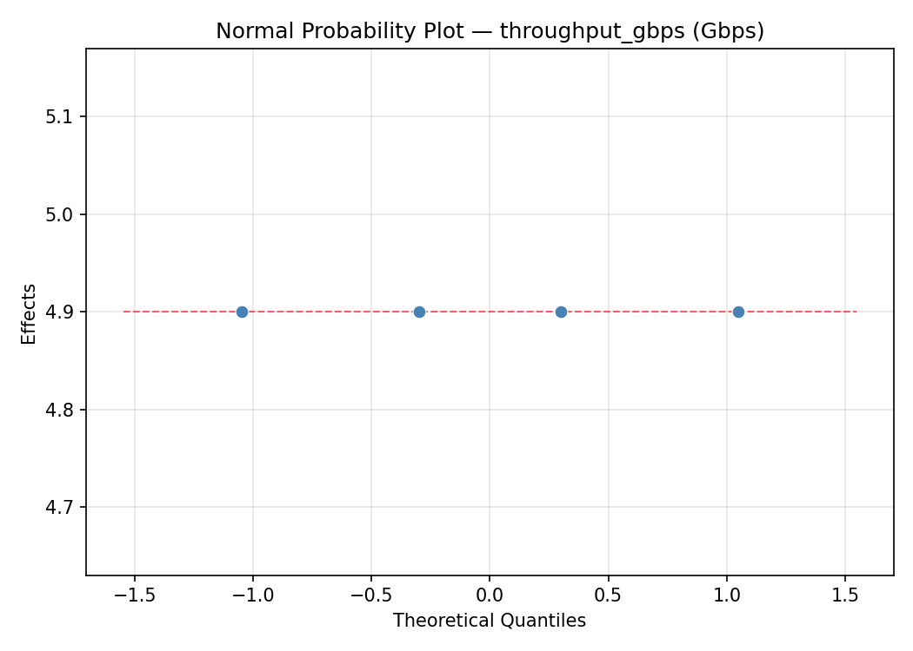
Half-Normal Plot of Effects
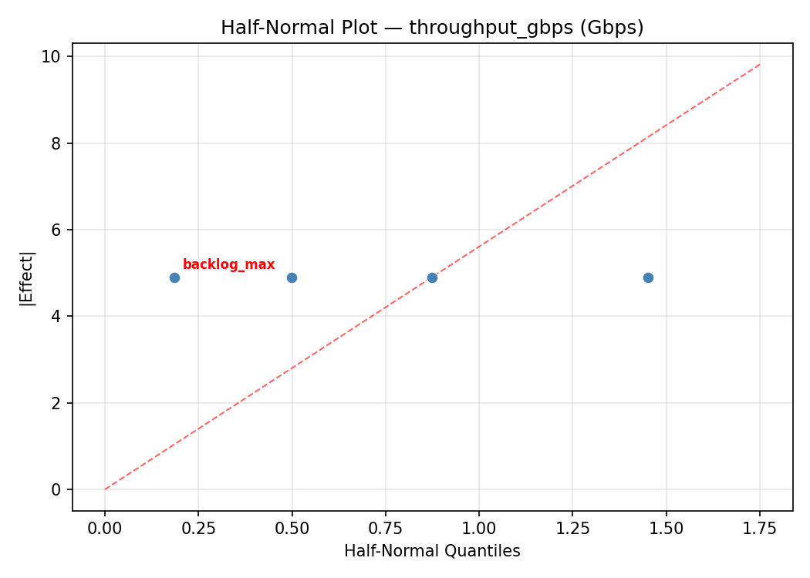
Model Diagnostics
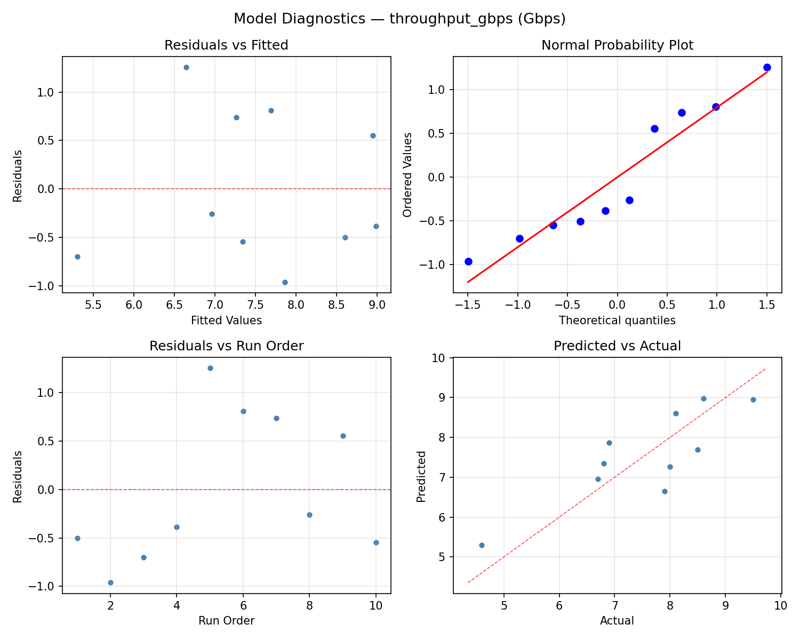
Response: softirq_pct
Top factors: netdev_budget (25.0%), txqueuelen (25.0%), tcp_wmem_max_kb (25.0%).
ANOVA
| Source | DF | SS | MS | F | p-value |
|---|
| Source | DF | SS | MS | F | p-value |
| netdev_budget | 9 | 40.5890 | 4.5099 | | |
| txqueuelen | 9 | 40.5890 | 4.5099 | | |
| tcp_wmem_max_kb | 9 | 40.5890 | 4.5099 | | |
| backlog_max | 9 | 40.5890 | 4.5099 | | |
| Error | (Lenth | PSE) | 0 | 0.0000 | 0.0000 |
| Total | 9 | 40.5890 | 4.5099 | | |
Pareto Chart
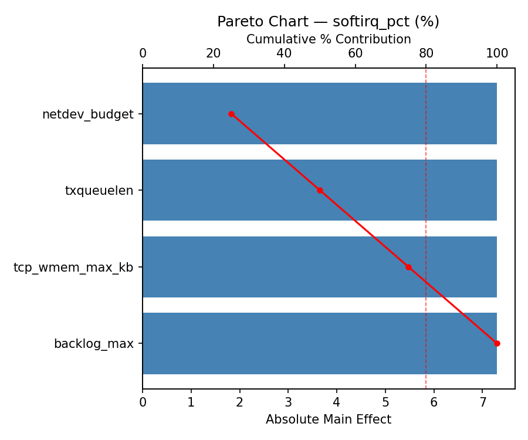
Main Effects Plot
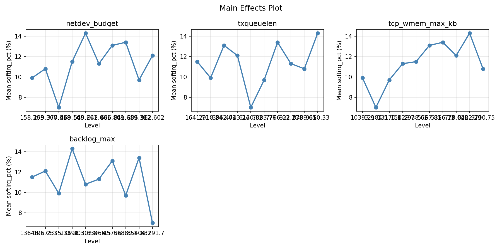
Normal Probability Plot of Effects
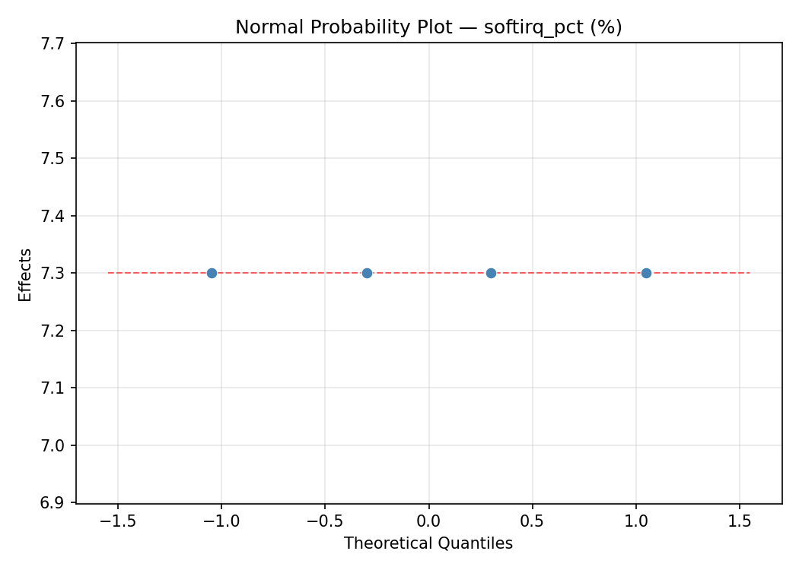
Half-Normal Plot of Effects
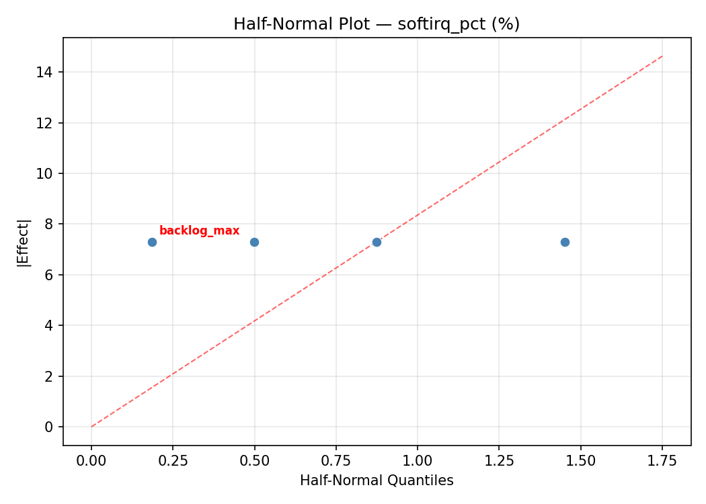
Model Diagnostics
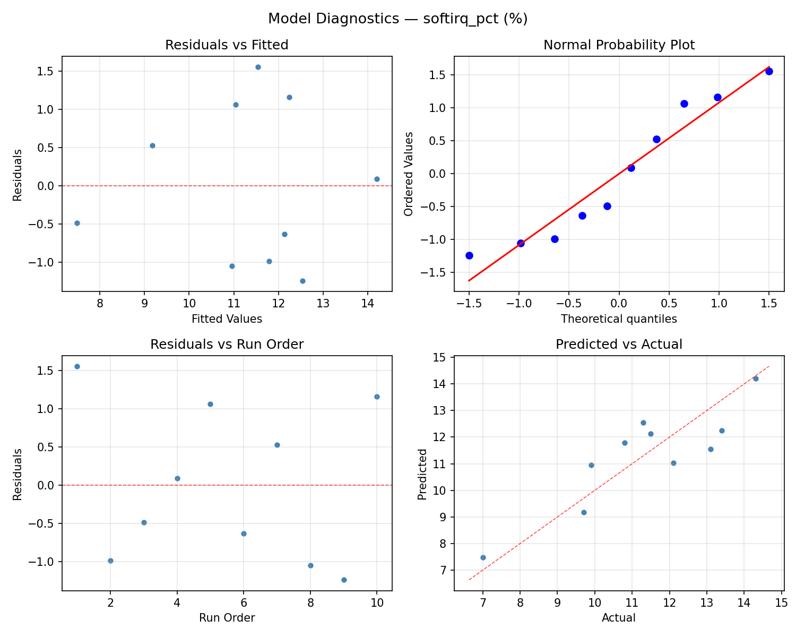
Response Surface Plots
3D surfaces fitted with quadratic RSM. Red dots are observed data points.
softirq pct netdev budget vs backlog max
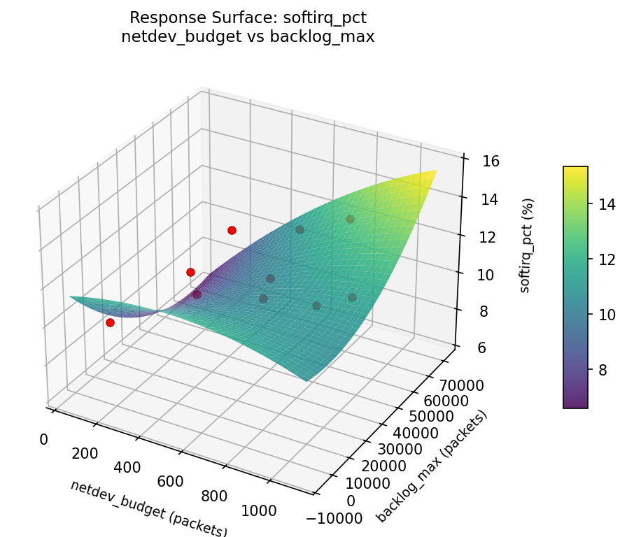
softirq pct netdev budget vs tcp wmem max kb

softirq pct netdev budget vs txqueuelen

softirq pct tcp wmem max kb vs backlog max

softirq pct txqueuelen vs backlog max
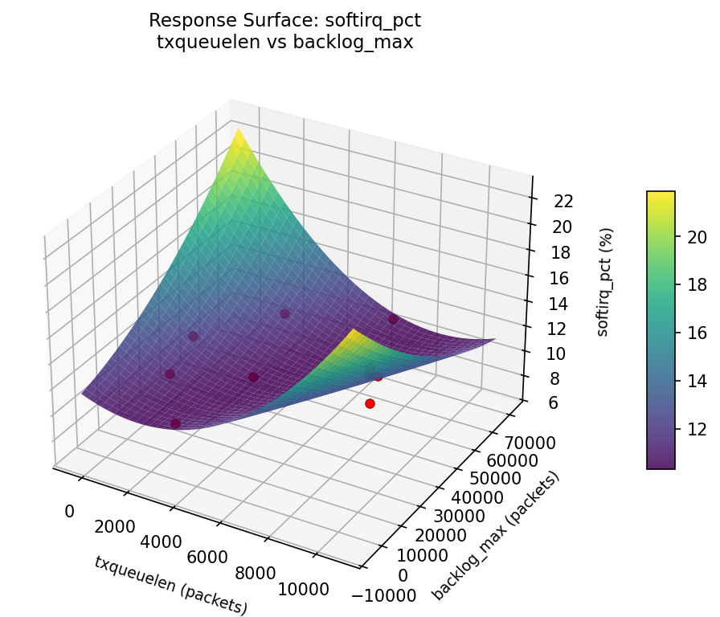
softirq pct txqueuelen vs tcp wmem max kb
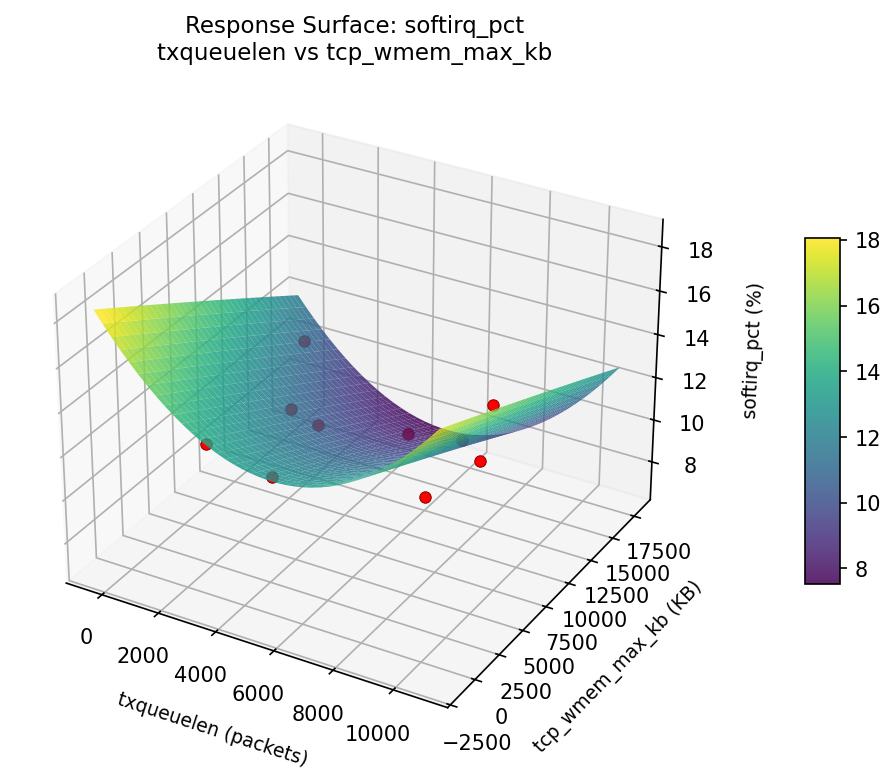
throughput gbps netdev budget vs backlog max
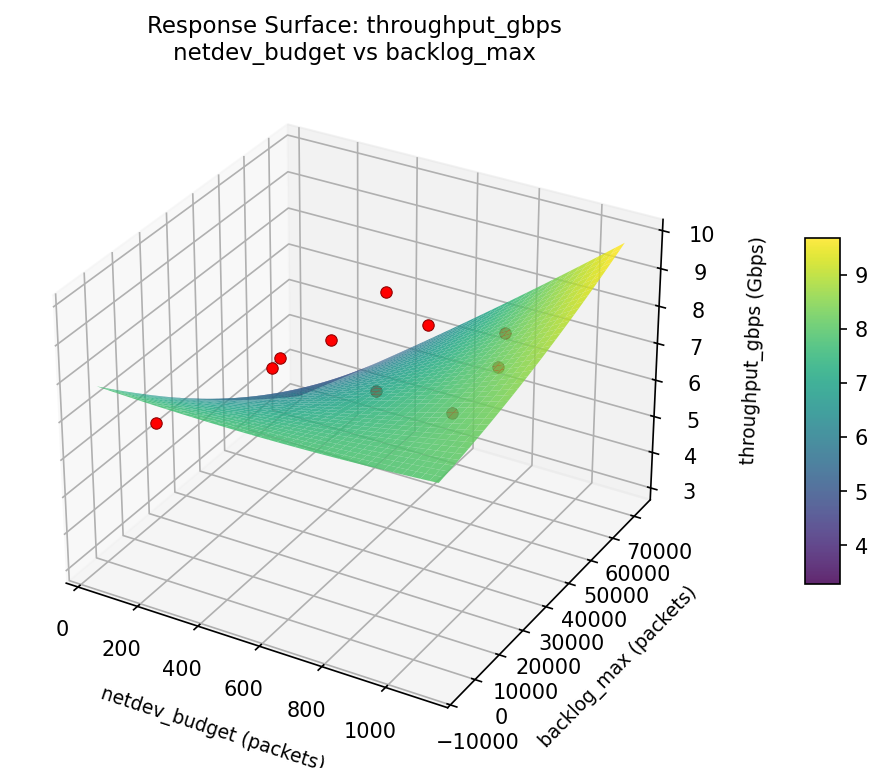
throughput gbps netdev budget vs tcp wmem max kb
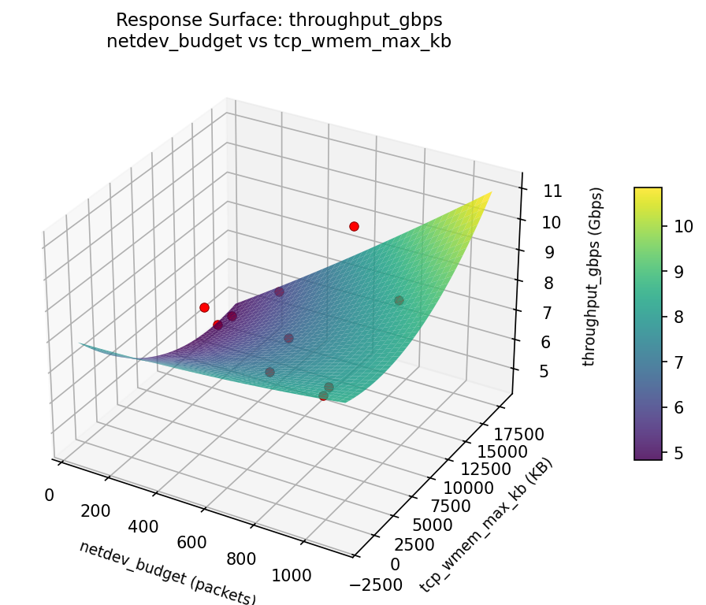
throughput gbps netdev budget vs txqueuelen

throughput gbps tcp wmem max kb vs backlog max

throughput gbps txqueuelen vs backlog max

throughput gbps txqueuelen vs tcp wmem max kb

Multi-Objective Optimization
When responses compete, Derringer–Suich desirability finds the best compromise.
Each response is scaled to a 0–1 desirability, then combined via a weighted geometric mean.
Overall Desirability
D = 0.7426
Per-Response Desirability
| Response | Weight | Desirability | Predicted | Dir |
|---|
throughput_gbps |
1.5 |
|
8.72 0.8100 8.72 Gbps |
↑ |
softirq_pct |
1.0 |
|
9.43 0.6518 9.43 % |
↓ |
Recommended Settings
| Factor | Value |
|---|
netdev_budget | 1015 packets |
txqueuelen | 1364 packets |
tcp_wmem_max_kb | 1.589e+04 KB |
backlog_max | 3.55e+04 packets |
Source: from RSM model prediction
Trade-off Summary
Sacrifice = how much worse than single-objective best.
| Response | Predicted | Best Observed | Sacrifice |
|---|
softirq_pct | 9.43 | 7.00 | +2.43 |
Top 3 Runs by Desirability
| Run | D | Factor Settings |
|---|
| #7 | 0.6524 | netdev_budget=986.962, txqueuelen=8803.61, tcp_wmem_max_kb=13350.3, backlog_max=22778.8 |
| #6 | 0.5886 | netdev_budget=294.595, txqueuelen=3237.44, tcp_wmem_max_kb=15685.8, backlog_max=62766.8 |
Model Quality
| Response | R² | Type |
|---|
softirq_pct | 0.2606 | linear |
Full Multi-Objective Output
============================================================
MULTI-OBJECTIVE OPTIMIZATION
Method: Derringer-Suich Desirability Function
============================================================
Overall desirability: D = 0.7426
Response Weight Desirability Predicted Direction
---------------------------------------------------------------------
throughput_gbps 1.5 0.8100 8.72 Gbps ↑
softirq_pct 1.0 0.6518 9.43 % ↓
Recommended settings:
netdev_budget = 1015 packets
txqueuelen = 1364 packets
tcp_wmem_max_kb = 1.589e+04 KB
backlog_max = 3.55e+04 packets
(from RSM model prediction)
Trade-off summary:
throughput_gbps: 8.72 (best observed: 9.50, sacrifice: +0.78)
softirq_pct: 9.43 (best observed: 7.00, sacrifice: +2.43)
Model quality:
throughput_gbps: R² = 0.1761 (linear)
softirq_pct: R² = 0.2606 (linear)
Top 3 observed runs by overall desirability:
1. Run #9 (D=0.6867): netdev_budget=795.975, txqueuelen=3518.39, tcp_wmem_max_kb=13114.6, backlog_max=28318.1
2. Run #7 (D=0.6524): netdev_budget=986.962, txqueuelen=8803.61, tcp_wmem_max_kb=13350.3, backlog_max=22778.8
3. Run #6 (D=0.5886): netdev_budget=294.595, txqueuelen=3237.44, tcp_wmem_max_kb=15685.8, backlog_max=62766.8
Full Analysis Output
=== Main Effects: throughput_gbps ===
Factor Effect Std Error % Contribution
--------------------------------------------------------------
netdev_budget 4.9000 0.4326 25.0%
txqueuelen 4.9000 0.4326 25.0%
tcp_wmem_max_kb 4.9000 0.4326 25.0%
backlog_max 4.9000 0.4326 25.0%
=== ANOVA Table: throughput_gbps ===
Source DF SS MS F p-value
-----------------------------------------------------------------------------
netdev_budget 9 16.8440 1.8716
txqueuelen 9 16.8440 1.8716
tcp_wmem_max_kb 9 16.8440 1.8716
backlog_max 9 16.8440 1.8716
Error (Lenth PSE) 0 0.0000 0.0000
Total 9 16.8440 1.8716
Note: Error estimated using Lenth's pseudo-standard-error (unreplicated design)
=== Summary Statistics: throughput_gbps ===
netdev_budget:
Level N Mean Std Min Max
------------------------------------------------------------
174.143 1 7.9000 0.0000 7.9000 7.9000
251.026 1 8.6000 0.0000 8.6000 8.6000
333.4 1 8.5000 0.0000 8.5000 8.5000
398.19 1 4.6000 0.0000 4.6000 4.6000
561.425 1 8.0000 0.0000 8.0000 8.0000
596.629 1 9.5000 0.0000 9.5000 9.5000
697.151 1 6.9000 0.0000 6.9000 6.9000
829.411 1 6.7000 0.0000 6.7000 6.7000
903.424 1 8.1000 0.0000 8.1000 8.1000
949.406 1 6.8000 0.0000 6.8000 6.8000
txqueuelen:
Level N Mean Std Min Max
------------------------------------------------------------
2126.32 1 7.9000 0.0000 7.9000 7.9000
3150.62 1 8.1000 0.0000 8.1000 8.1000
3836.71 1 8.6000 0.0000 8.6000 8.6000
4785.61 1 6.9000 0.0000 6.9000 6.9000
5454.13 1 8.0000 0.0000 8.0000 8.0000
6427.23 1 9.5000 0.0000 9.5000 9.5000
7676.19 1 6.7000 0.0000 6.7000 6.7000
8550.52 1 8.5000 0.0000 8.5000 8.5000
912.817 1 4.6000 0.0000 4.6000 4.6000
9301.83 1 6.8000 0.0000 6.8000 6.8000
tcp_wmem_max_kb:
Level N Mean Std Min Max
------------------------------------------------------------
10107.8 1 8.1000 0.0000 8.1000 8.1000
12727.1 1 7.9000 0.0000 7.9000 7.9000
13218.5 1 6.9000 0.0000 6.9000 6.9000
16260.7 1 8.6000 0.0000 8.6000 8.6000
2979.36 1 8.0000 0.0000 8.0000 8.0000
4336.49 1 8.5000 0.0000 8.5000 8.5000
503.128 1 6.7000 0.0000 6.7000 6.7000
5655.44 1 9.5000 0.0000 9.5000 9.5000
7478.73 1 4.6000 0.0000 4.6000 4.6000
8639.42 1 6.8000 0.0000 6.8000 6.8000
backlog_max:
Level N Mean Std Min Max
------------------------------------------------------------
11275.6 1 6.9000 0.0000 6.9000 6.9000
19371.2 1 6.8000 0.0000 6.8000 6.8000
26656 1 8.5000 0.0000 8.5000 8.5000
30895.2 1 9.5000 0.0000 9.5000 9.5000
34371.6 1 8.1000 0.0000 8.1000 8.1000
43983.6 1 8.6000 0.0000 8.6000 8.6000
47961.4 1 4.6000 0.0000 4.6000 4.6000
56787.4 1 8.0000 0.0000 8.0000 8.0000
60132.7 1 6.7000 0.0000 6.7000 6.7000
7213.38 1 7.9000 0.0000 7.9000 7.9000
=== Main Effects: softirq_pct ===
Factor Effect Std Error % Contribution
--------------------------------------------------------------
netdev_budget 7.3000 0.6716 25.0%
txqueuelen 7.3000 0.6716 25.0%
tcp_wmem_max_kb 7.3000 0.6716 25.0%
backlog_max 7.3000 0.6716 25.0%
=== ANOVA Table: softirq_pct ===
Source DF SS MS F p-value
-----------------------------------------------------------------------------
netdev_budget 9 40.5890 4.5099
txqueuelen 9 40.5890 4.5099
tcp_wmem_max_kb 9 40.5890 4.5099
backlog_max 9 40.5890 4.5099
Error (Lenth PSE) 0 0.0000 0.0000
Total 9 40.5890 4.5099
Note: Error estimated using Lenth's pseudo-standard-error (unreplicated design)
=== Summary Statistics: softirq_pct ===
netdev_budget:
Level N Mean Std Min Max
------------------------------------------------------------
174.143 1 12.1000 0.0000 12.1000 12.1000
251.026 1 14.3000 0.0000 14.3000 14.3000
333.4 1 11.5000 0.0000 11.5000 11.5000
398.19 1 7.0000 0.0000 7.0000 7.0000
561.425 1 9.7000 0.0000 9.7000 9.7000
596.629 1 11.3000 0.0000 11.3000 11.3000
697.151 1 10.8000 0.0000 10.8000 10.8000
829.411 1 9.9000 0.0000 9.9000 9.9000
903.424 1 13.1000 0.0000 13.1000 13.1000
949.406 1 13.4000 0.0000 13.4000 13.4000
txqueuelen:
Level N Mean Std Min Max
------------------------------------------------------------
2126.32 1 12.1000 0.0000 12.1000 12.1000
3150.62 1 13.1000 0.0000 13.1000 13.1000
3836.71 1 14.3000 0.0000 14.3000 14.3000
4785.61 1 10.8000 0.0000 10.8000 10.8000
5454.13 1 9.7000 0.0000 9.7000 9.7000
6427.23 1 11.3000 0.0000 11.3000 11.3000
7676.19 1 9.9000 0.0000 9.9000 9.9000
8550.52 1 11.5000 0.0000 11.5000 11.5000
912.817 1 7.0000 0.0000 7.0000 7.0000
9301.83 1 13.4000 0.0000 13.4000 13.4000
tcp_wmem_max_kb:
Level N Mean Std Min Max
------------------------------------------------------------
10107.8 1 13.1000 0.0000 13.1000 13.1000
12727.1 1 12.1000 0.0000 12.1000 12.1000
13218.5 1 10.8000 0.0000 10.8000 10.8000
16260.7 1 14.3000 0.0000 14.3000 14.3000
2979.36 1 9.7000 0.0000 9.7000 9.7000
4336.49 1 11.5000 0.0000 11.5000 11.5000
503.128 1 9.9000 0.0000 9.9000 9.9000
5655.44 1 11.3000 0.0000 11.3000 11.3000
7478.73 1 7.0000 0.0000 7.0000 7.0000
8639.42 1 13.4000 0.0000 13.4000 13.4000
backlog_max:
Level N Mean Std Min Max
------------------------------------------------------------
11275.6 1 10.8000 0.0000 10.8000 10.8000
19371.2 1 13.4000 0.0000 13.4000 13.4000
26656 1 11.5000 0.0000 11.5000 11.5000
30895.2 1 11.3000 0.0000 11.3000 11.3000
34371.6 1 13.1000 0.0000 13.1000 13.1000
43983.6 1 14.3000 0.0000 14.3000 14.3000
47961.4 1 7.0000 0.0000 7.0000 7.0000
56787.4 1 9.7000 0.0000 9.7000 9.7000
60132.7 1 9.9000 0.0000 9.9000 9.9000
7213.38 1 12.1000 0.0000 12.1000 12.1000
Optimization Recommendations
=== Optimization: throughput_gbps ===
Direction: maximize
Best observed run: #9
netdev_budget = 872.757
txqueuelen = 8507.73
tcp_wmem_max_kb = 15168.6
backlog_max = 39968.4
Value: 9.5
RSM Model (linear, R² = 0.3531, Adj R² = -0.1644):
Coefficients:
intercept +7.5559
netdev_budget +0.5425
txqueuelen +0.3294
tcp_wmem_max_kb +0.9630
backlog_max -0.3582
Predicted optimum (from linear model, at observed points):
netdev_budget = 872.757
txqueuelen = 8507.73
tcp_wmem_max_kb = 15168.6
backlog_max = 39968.4
Predicted value: 8.8847
Surface optimum (via L-BFGS-B, linear model):
netdev_budget = 1024
txqueuelen = 10000
tcp_wmem_max_kb = 16384
backlog_max = 1000
Predicted value: 9.7491
Model quality: Weak fit — consider adding center points or using a different design.
Factor importance:
1. netdev_budget (effect: 4.9, contribution: 25.0%)
2. txqueuelen (effect: 4.9, contribution: 25.0%)
3. tcp_wmem_max_kb (effect: 4.9, contribution: 25.0%)
4. backlog_max (effect: 4.9, contribution: 25.0%)
=== Optimization: softirq_pct ===
Direction: minimize
Best observed run: #3
netdev_budget = 265.54
txqueuelen = 5413.52
tcp_wmem_max_kb = 387.738
backlog_max = 55767
Value: 7.0
RSM Model (linear, R² = 0.4219, Adj R² = -0.0406):
Coefficients:
intercept +11.2642
netdev_budget +0.3641
txqueuelen -1.4065
tcp_wmem_max_kb +1.2578
backlog_max -0.2307
Predicted optimum (from linear model, at observed points):
netdev_budget = 588.946
txqueuelen = 1360.78
tcp_wmem_max_kb = 11335.3
backlog_max = 9611.25
Predicted value: 13.0658
Surface optimum (via L-BFGS-B, linear model):
netdev_budget = 128
txqueuelen = 10000
tcp_wmem_max_kb = 256
backlog_max = 65536
Predicted value: 8.0051
Model quality: Weak fit — consider adding center points or using a different design.
Factor importance:
1. netdev_budget (effect: 7.3, contribution: 25.0%)
2. txqueuelen (effect: 7.3, contribution: 25.0%)
3. tcp_wmem_max_kb (effect: 7.3, contribution: 25.0%)
4. backlog_max (effect: 7.3, contribution: 25.0%)